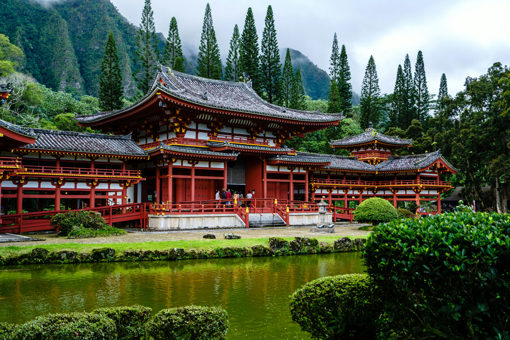
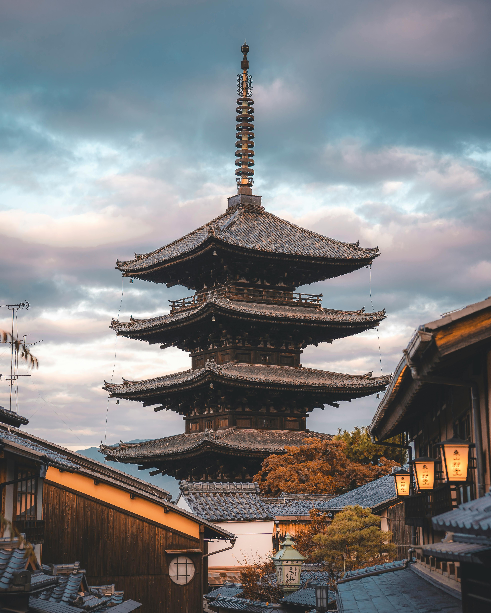
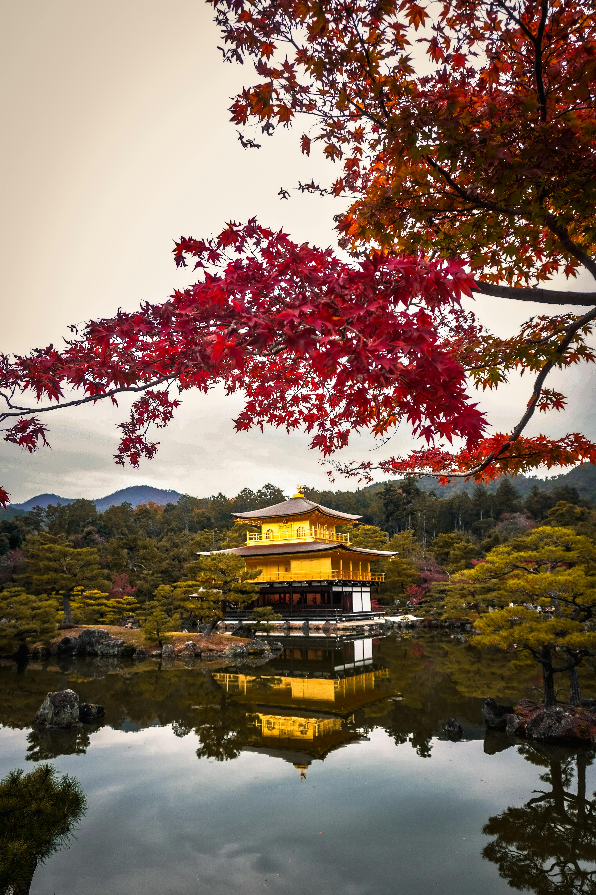

Notre équipe, constituée de trois étudiants en BUT INFORMATIQUE en première année, a le plaisir de vous présenter KYOTO et son patrimoine dans le cadre d’une médiation culturelle et numérique en partenariat avec L’UNESCO. Bonne visite à tous.


Autrefois capitale, désormais capitale culturelle et plus belle ville du Japon, KYOTO regorge de patrimoine et d’histoire. Nichée entre les montagnes, avec ses 2000 temples, ses sanctuaires, palais, jardins, son architecture et ses évènements culturels, il y en a pour tous les goûts et tous les âges.
L’histoire de Kyoto
Nichée entre les montagnes au centre de l'ile d’Honshu, Kyoto fut la capitale japonaise de 794 à 1868. Elle est considérée comme la plus belle ville du japon, et ayant échappée aux bombes de la seconde guerre mondiale, elle possède encore de nombreux bâtiments d'avant guerre.


Son patrimoine
Kyoto est considérée capitale culturelle du Japon avec près de 2 000 temples, ses sanctuaires et ses palais, ses ponts, ses jardins, son architecture et sa cuisine traditionnelle classée au patrimoine de l’UNESCO.